What is the Workflow Editor?
The SPMF Workflow Editor is a graphical tool for creating, editing, validating, and executing workflows of data mining algorithms. A workflow is a set of algorithms where the output of one algorithm may become the input of subsequent algorithms. This allows you to chain multiple algorithms together to perform complex data mining tasks automatically.
How to run this example?
If you are using the graphical interface of SPMF, (1) choose the "SPMF_workflow_editor" algorithm, (2) click "Run algorithm".
This will open the SPMF workflow editor, which is displayed below:
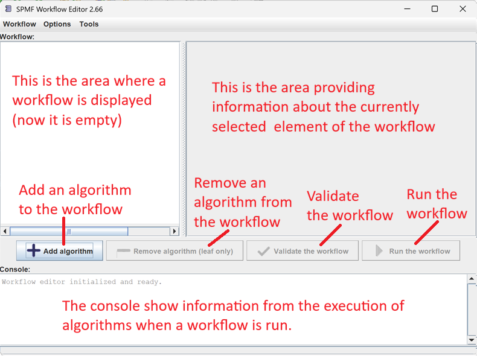
The workflow editor is a window divided in the five areas:
- On the left, the current workflow is displayed (here it is empty).
- On the right, information about the currently selected element from the workflow is presented and can be edited (here empty)
- In the center, four buttons can be used to (1) add an algorithm to the workflow, (2) remove an algorithm from the workflow, (3) validate the workflow, and (4) run the workflow.
- At the top, there is a menu bar. From that menu bar, the user can save and load a workflow from a file, export a workflow as a BAT or SH scripts and give access to some useful tools.
- At the very bottom, there is a console that displays messages produced by algorithms when a workflow is run.
How to create a workflow?
Creating a workflow can be done by following these steps:
Step 1: Click the Add algorithm button to add the first algorithm node to the workflow.
This will create a new node:
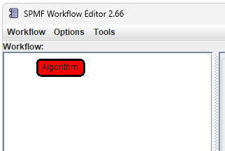
Step 2: Select the algorithm node by clicking on it. The information panel on the right will display the properties of the selected node.
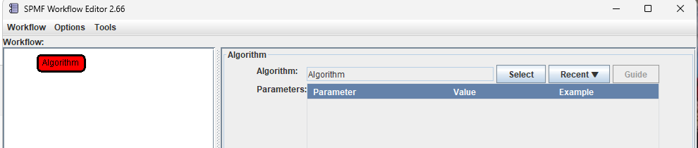
Step 3: In the information panel, configure the algorithm node by selecting an algorithm.
First, click the Select button next to "Algorithm:" to choose an algorithm from the algorithm browser. In this example, we will choose the Apriori algorithm, and then click the OK button.
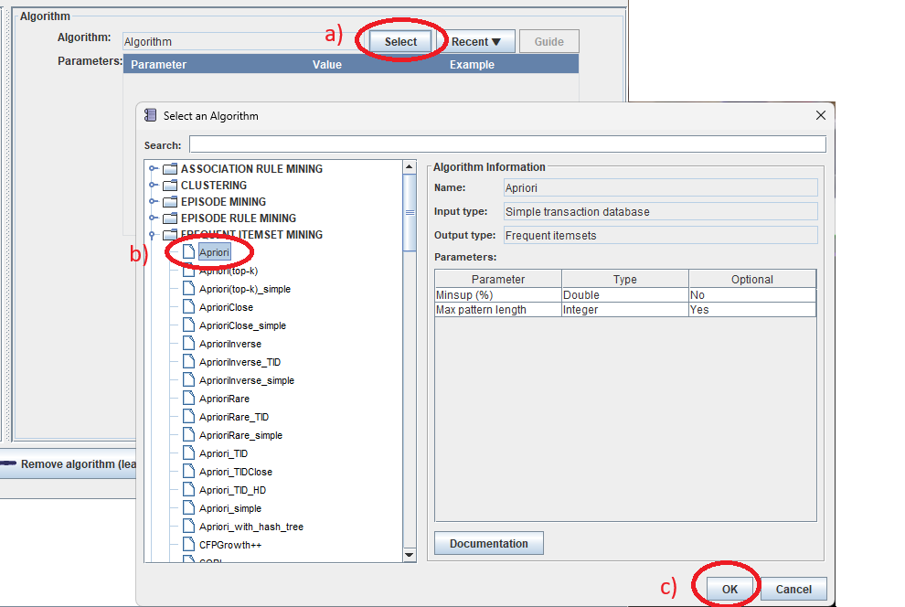
Note that it is alternatively possible to click the Recent ▼button to select an algorithm that has been used recently.
In this example, after selecting the Apriori algorithm, the workflow view is updated on the left to show that this algorithm has an input and that it will produce and output. Moreover, on the right, the information panel is updated to show that this algorithm has two parameters called the minimum support (Minsup) and the maximum pattern length (optional)
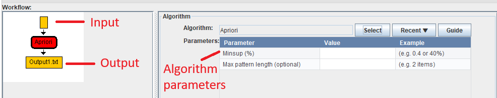
In this example, we will set the Minsup parameter to 0.4 by entering the value in the parameter table and then pressing enter:
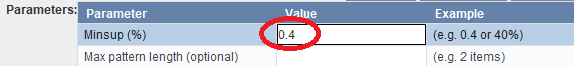
Then, we can select the input file for this algorithm. This is done by a) clicking on the green input node in the workflow, and then clicking on the "Select" button to select an input file. Alternatively, the "Recent" button can be used to select a recent file.
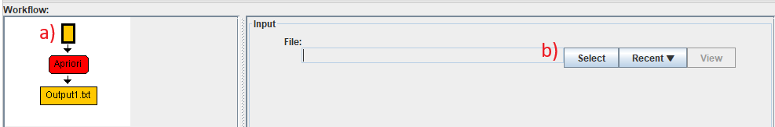
In this example, we will choose the file contextPasquier99txt, which is provided with SPMF.
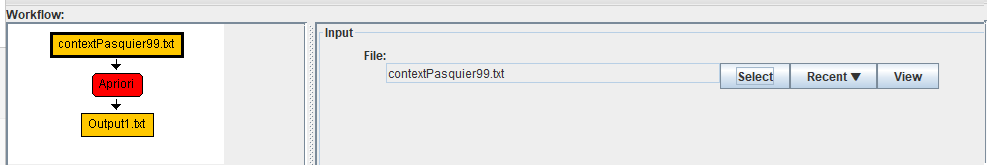
Then, we can set the output file for this algorithm. This is done by a) clicking on the green output node in the workflow, and then clicking on the "Select" button to set where to write the output file produced by the algorithm.. Alternatively, the "Recent" button can be used to select a recently used file location.
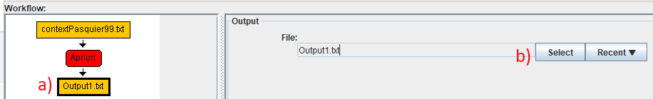
In this example we will set the name of the output file to "frequent_itemsets.txt".
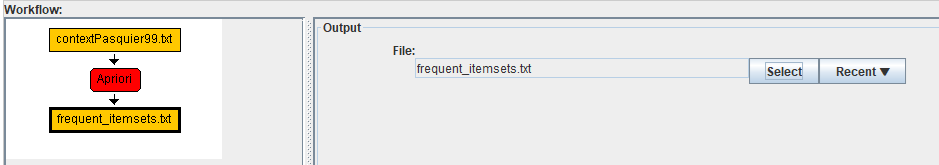
After completing this step, we have a complete workflow with a single algorithm.
We can click on the Validate the workflow button to verify that we have made no mistake such as forgetting to set a mandatory parameter.
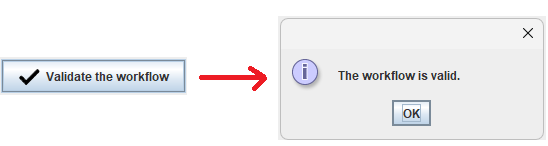
We can also click on "Run the workflow " to execute the workflow.
This will run the algorithm. Information about the algorithm execution will be displayed in the console of the Workflow editor, and the output will be saved to the the file"frequent_itemsets.txt".
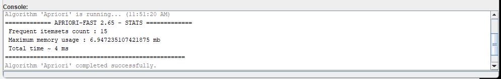
This is interesting, but we may prefer to view the result using tools for viewing frequent itemsets offered in SPMF. To do this, we will add another algorithm to the workflow.
We will click on the green output node in the workflow editor, and click "Add algorithm".
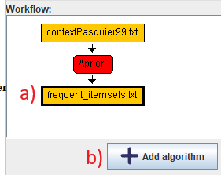
This will add another algorithm:
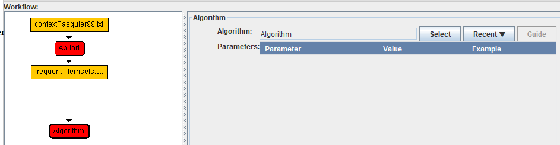
Then, we will click on the "Select" button in the right panel to choose the Visualize_frequent_itemsets algorithm. In the algorithm browser, a) we can use the search bar to quickly find this algorithm, then b) we click on it, and then c) we click the "OK" button:
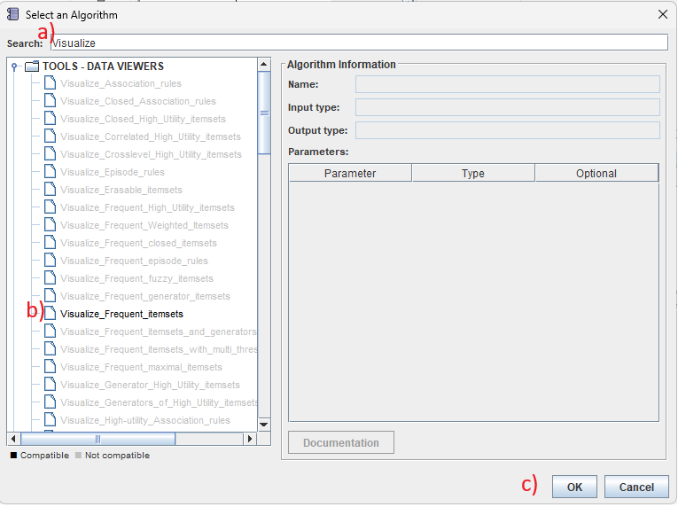
Now the workflow will appear like this:
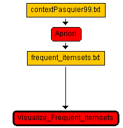
We can then click on "Run the workflow " to execute the workflow.
This will execute the Apriori algorithm and then open the tool for visualizing frequent itemsets.
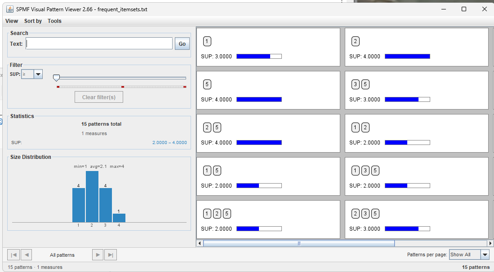
Now, if we are satisfied with this workflow, we can save the workflow to a file using the save workflow menu:
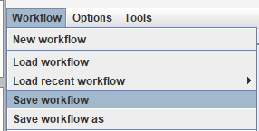
This will allow to open this workflow again from the Workflow editor to modify it. We can also use the Workflow menu to export the workflow as a script (a BAT file on windows or SH file for Linux).
How to create more complex workflows?
Since SPMF 2.66, is now possible to create workflows with branches. To do this, we can create on an file in the worklow view and click the "Add algorithm" button.
For example, continuing the previous example, we can a) click on the "frequent_itemsets.txt" node and then click b) the button "Add algorithm":
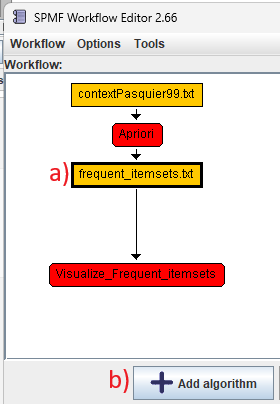
This will create a new algorithm node:
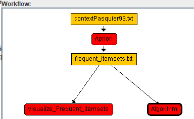
We can now click on the "Select" button to open the algorithm browser and select an algorithm.
For example, a) we click on "Select", b) choose the "Open_text_file_with_SPMF_text_editor" algo
Therithm and c) click "OK":
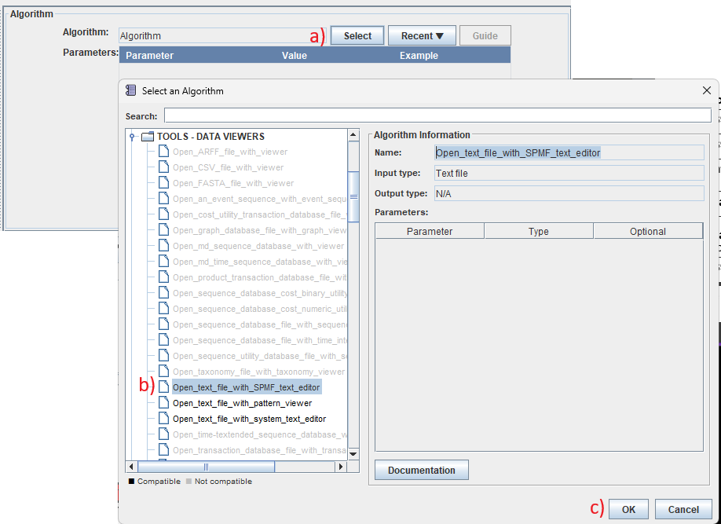
The result is then like this:
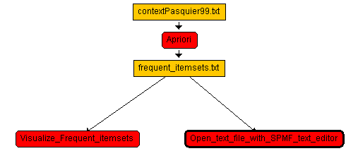
We could then run the workflow by clickling the "Run the workflow" button. The Apriori will then be executed and then the Visualized_frequent_itemsets tools will be opened, and then the SPMF text editor will be open as well to view the result.
Now, lets say that we want to add another algorithm that is run separately from Apriori in a different sequence. To to this, a) we will click on the topmost node of the worklow and then click b) add algorithm.
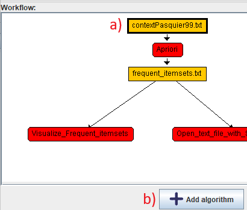
The result will be like this:
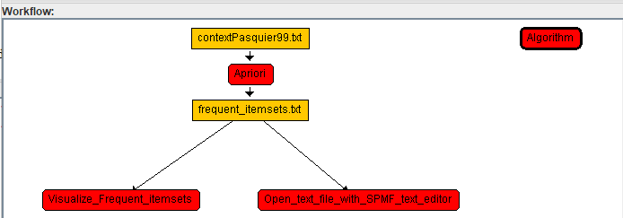
After that we can continue adding algorithms in the same way to build a larger workflow. For example, after a few steps, it may look like this:
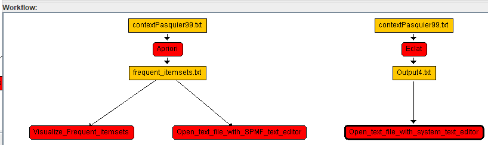
Other features
Besides the features explained above, is also possible to click on algorithm nodes in the worfklow view to remove algorithms using the "Remove algorithm" button.
It is also possible to right-click on nodes from the workflow editor to remove or duplicate algorithms. Here is a picture:
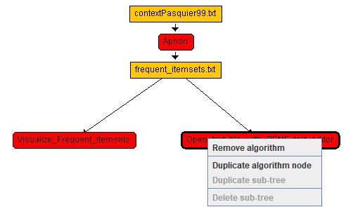
What is the workflow file format?
Workflow files use a simple line-oriented plain text format. Each line contains a keyword followed by space-separated key=value pairs.
Every workflow file must begin with this header line:
@FILETYPE="WORKFLOW"
After the header, the file contains four types of record lines:
NODE record
A NODE record defines one algorithm step in the workflow:
NODE id=<integer> parentId=<integer> algorithm=<name> showInput=<boolean> showOutput=<boolean>
- id – Unique integer identifier for this node (assigned automatically in depth-first order during save)
- parentId – The id of the parent node, or
0for root nodes (algorithms that have their own input files) - algorithm – The name of the SPMF algorithm (e.g.,
Eclat,FPGrowth_itemsets,PrefixSpan) - showInput –
trueif this node has a visible input file node,falseotherwise. Root nodes typically havetrue. Child nodes havefalsebecause they receive input from their parent's output. - showOutput –
trueif this algorithm produces an output file,falseotherwise
INPUT record
An INPUT record defines the input file for a root node. This record is only present when showInput=true:
INPUT id=<integer> file=<path> name=<display_name>
- id – References the id of the corresponding NODE record
- file – Full path to the input file. Backslashes are escaped as
BSLASHand spaces are escaped asSPACE. - name – Display name shown in the user interface (typically just the filename without the full path)
OUTPUT record
An OUTPUT record defines the output file for an algorithm node:
OUTPUT id=<integer> file=<path> name=<display_name>
- id – References the id of the corresponding NODE record
- file – Full path to the output file. Backslashes and spaces are escaped as described above.
- name – Display name shown in the user interface
PARAM record
A PARAM record defines one parameter value for an algorithm. There is one PARAM record for each non-null parameter:
PARAM id=<integer> index=<integer> value=<string>
- id – References the id of the corresponding NODE record
- index – Zero-based parameter index (matches the order of parameters in the algorithm's signature)
- value – The parameter value. Backslashes and spaces are escaped as described above.
Escaping rules
Since the format uses whitespace to separate fields, any characters that would break token splitting are percent-encoded:
- Percent character (
%) →%25(encoded first to avoid ambiguity) - Space character →
%20 - Other control characters below ASCII 0x21 or equal to 0x7F →
%XX(two hex digits) - All other characters, including backslashes and Unicode, are stored as-is.
Example: The Windows file path C:\Users\Phil\Desktop\DATASETS\chess.txt is stored verbatim because backslashes do not need encoding:
C:\Users\Phil\Desktop\DATASETS\chess.txt
A path or value that contains spaces, such as C:\My Documents\chess.txt, is stored as:
C:\My%20Documents\chess.txt
When the workflow is loaded, all percent-escape sequences are automatically decoded back to the original characters.
An example of workflow file
This example shows a workflow file that runs two different frequent itemset mining algorithms (Eclat and Carpenter) on the same input file, then visualizes each result. The Eclat output is also opened in a text editor.
Workflow file content (workflow_eclat.txt)
@FILETYPE="WORKFLOW" NODE id=1 parentId=0 algorithm=Eclat showInput=true showOutput=true INPUT id=1 file=C:%5CUsers%5CPhil%5CDesktop%5CDATASETS%5Cchess.txt name=chess.txt OUTPUT id=1 file=Output1.txt name=Output1.txt PARAM id=1 index=0 value=0.8 NODE id=2 parentId=1 algorithm=Visualize_Frequent_itemsets showInput=false showOutput=false OUTPUT id=2 file=Output2.txt name=Output2.txt NODE id=3 parentId=1 algorithm=Open_text_file_with_SPMF_text_editor showInput=false showOutput=false OUTPUT id=3 file=Output3.txt name=Output3.txt NODE id=4 parentId=0 algorithm=Carpenter showInput=true showOutput=true INPUT id=4 file=C:%5CUsers%5CPhil%5CDesktop%5CDATASETS%5Cchess.txt name=chess.txt OUTPUT id=4 file=Output4.txt name=Output4.txt PARAM id=4 index=0 value=0.7 NODE id=5 parentId=4 algorithm=Visualize_Frequent_closed_itemsets showInput=false showOutput=false OUTPUT id=5 file=Output5.txt name=Output5.txt This represents this workflow:which has the following structure: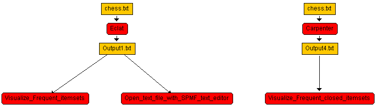
- Node 1: Eclat (root algorithm)
- Input file:
chess.txt - Output file:
Output1.txt - Parameter: minimum support threshold =
0.8(80%) - Children:
- Node 2: Visualize_Frequent_itemsets – Takes
Output1.txtas input and visualizes the frequent itemsets - Node 3: Open_text_file_with_SPMF_text_editor – Takes
Output1.txtas input and opens it in the SPMF text editor
- Node 2: Visualize_Frequent_itemsets – Takes
- Input file:
- Node 4: Carpenter (root algorithm)
- Input file:
chess.txt - Output file:
Output4.txt - Parameter: minimum support threshold =
0.7(70%) - Children:
- Node 5: Visualize_Frequent_closed_itemsets – Takes
Output4.txtas input and visualizes the closed itemsets
- Node 5: Visualize_Frequent_closed_itemsets – Takes
- Input file:
How to export workflows as scripts?
Workflows can be exported as executable shell scripts for batch processing on the command line:
- Workflow → Export workflow as BAT script (for Windows) – Generates a
.batbatch file for Windows systems - Workflow → Export workflow as SH script (for Linux) – Generates a
.shshell script for Linux/Unix systems with a shebang line (#!/bin/bash)
These scripts invoke java -jar spmf.jar run <algorithm> <input> <output> <parameters> for each algorithm in the workflow in breadth-first order.
Note: Script export does not preserve parallelism. All algorithms are executed sequentially in the order they appear in the script. If you need parallel execution, use the Workflow Editor's Run command instead.
Where can I get more information?
For information about specific algorithms that can be used in workflows, see the SPMF documentation.
For general questions about SPMF, visit the SPMF website.